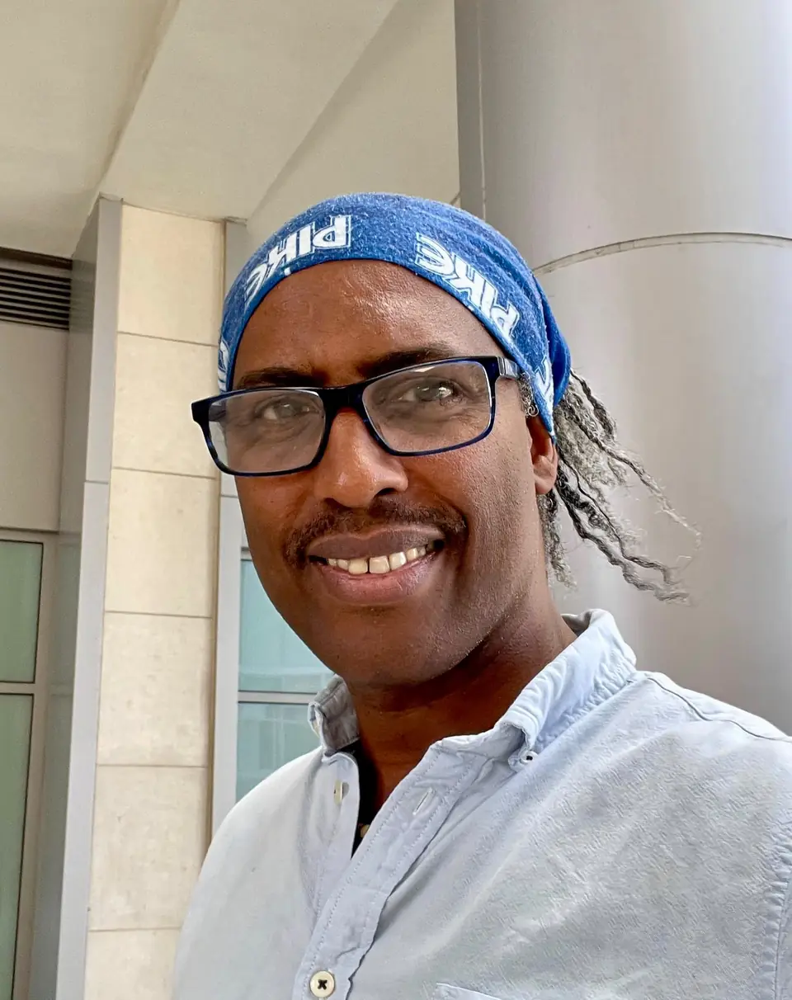

From Havana to Bergen
Havana
Ramón Eduardo Haití Filiu was born in Havana in 1971. He is the son of the sculptor Ramón Haití Eduardo (b. 1932), a member of the Grupo Antillano, and of the seamstress Mercedes Filiu, from whom he takes his second surname.
He completed the Paulita Concepción art school in 1984, studied at the San Alejandro Academy of Fine Arts from 1992 to 1996 and took a bronze casting course in 1997. For more than a decade he taught sculpture at the José Antonio Díaz Peláez art school in Havana, and he exhibited at UNEAC and at the Havana Biennial.
Bergen
In 2006 he exhibited in Bodø, in northern Norway, where the University of Nordland and the Nordland psychiatric hospital acquired his work. He settled in Bergen in 2009. Since then he has painted murals for the Nattjazz festival, designed its 2017 poster and exhibited in Bergen, Stavanger, Oslo and across Western Norway.
The work
His paintings are built in layers: oil and acrylic, collage of printed fabric, jute and corrugated cardboard. The figures, often women in wide-brimmed hats, fish and masks, come from the visual world of Cuba, where Santería is part of everyday culture, and speak of relationships, solidarity and personal freedom. Among his references he names Matisse, Picasso, Emil Nolde and Diego Rivera.
In recent years his practice has moved towards three-dimensional structures that combine painting, textile, collage and epoxy resin, exploring form, transparency, space and visual memory.
The light
He has said that the scarce light of the Norwegian winter keeps making his paintings brighter. This website follows that same light: its colours change with the position of the sun over Bergen.